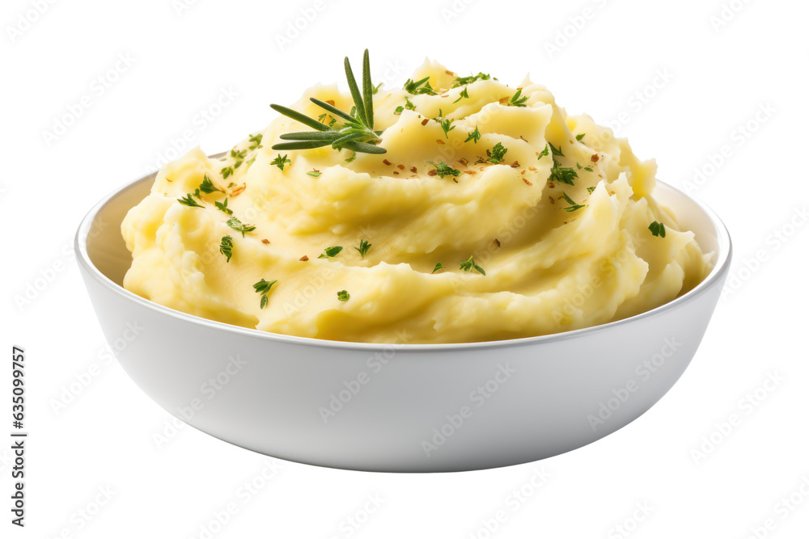

Garlic Mashed Potato Recipe

Discription:
These garlic mashed potatoes are rich and very tasty!
For a creamier texture, use heavy cream in place of the milk. These are also terrific topped with sesame seeds or green onions.
Ingredients:
- 2 pounds Yukon gold potatoes, peeled and cut into 1 ½-inch pieces
- 5 large garlic cloves, peeled and smashed
- 1 tablespoon kosher salt
- ⅓ cup unsalted butter, cut into 8 pieces, plus more for serving
- ¾ cup whole milk
- 1 teaspoon kosher salt
- ¼ teaspoon ground white pepper
Directions:
Back to home page